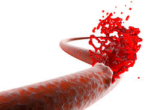

Understanding Hemophilia

Hemophilia is a rare, inherited blood disorder in which the blood does not clot properly, leading to excessive bleeding from even minor injuries. It is caused by a deficiency or dysfunction in specific clotting factors that are essential for blood clot formation.
Key Points About Hemophilia:
Types of Hemophilia
- Hemophilia A: Caused by a deficiency of clotting factor VIII. It is the most common form of hemophilia.
- Hemophilia B: Caused by a deficiency of clotting factor IX. It is less common than Hemophilia A and is sometimes referred to as Christmas disease.
- Hemophilia C: Caused by a deficiency of clotting factor XI. It is less severe and less common, often affecting individuals of Ashkenazi Jewish descent.
Symptoms
- Bleeding: Unusual bleeding or bleeding that does not stop easily, including bleeding into joints and muscles.
- Bruising: Frequent and unexplained bruises.
- Joint Pain and Swelling: Bleeding into joints can cause pain, swelling, and long-term joint damage.
- Prolonged Bleeding: After cuts, dental work, or surgery.
Diagnosis
Thalassemia is often diagnosed through blood tests that reveal anemia and abnormal hemoglobin levels. Genetic testing can confirm the diagnosis and determine the specific type of thalassemia.
Treatment
- Factor Replacement Therapy: Involves infusing the missing clotting factor (factor VIII or IX) into the bloodstream. This is the primary treatment for managing hemophilia.
- Desmopressin (DDAVP): Used for Hemophilia A to stimulate the release of factor VIII from the body’s own stores.
- Antifibrinolytics: Medications that help prevent the breakdown of blood clots.
- Gene Therapy: An emerging treatment that aims to address the underlying genetic cause of hemophilia.
Management
Ongoing medical care and monitoring are essential. Individuals with hemophilia require regular check-ups and may need specialized care from a hematologist.
Prevention
Genetic counseling is recommended for individuals with a family history of hemophilia to understand the risk of passing the disorder to offspring.
With appropriate treatment and management, individuals with hemophilia can lead relatively normal lives, though they may need to take precautions to avoid injury and manage bleeding episodes.